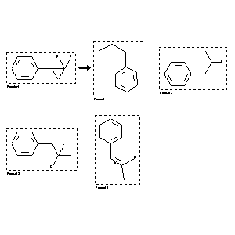

|  |
| FA | RX(1); FLST(1); RX(1) |
Reaction (1 of 1)
| Reaction ID | 2034010 |
| Reactant BRN | 1933513 |
| Reactant | 1,1-difluoro-2-phenylcyclopropane |
| Product BRN | 1903006; 1931247; 2077917; 2039246 |
| Product | propylbenzene; 2-fluoro-1-phenylpropane; 2,2-Difluoro-1-phenylpropane; (Z)-2-fluoro-1-phenylpropene |
| No. of Reaction Details | 1 |
Reaction Details (1 of 1)
| Reaction Classification | Chemical behaviour |
| Reagent | hydrogen |
| Catalyst | PdO |
| Solvent | methanol |
| Pressure | 760 |
| Other Conditions | Ambient temperature; var. catalysts, var. bases, var times |
| Subject Studied | Product distribution |
| Citation Pointer | 5802828; Journal; Isogai, Koji; Nishizawa, Naomi; Saito, Tetsuji; Sakai, Jun-ichi; BCSJA8; Bull.Chem.Soc.Jpn.; EN; 56; 5; 1983; 1555-1556; |
Reference (1 of 1)
| Citation Number | 5802828 |
| Document Type | Journal |
| Authors | Isogai, Koji; Nishizawa, Naomi; Saito, Tetsuji; Sakai, Jun-ichi |
| CODEN | BCSJA8 |
| Journal Title | Bull.Chem.Soc.Jpn. |
| Language Code | EN |
| (Series) Volume | 56 |
| Number | 5 |
| Publication Year | 1983 |
| Page | 1555-1556 |